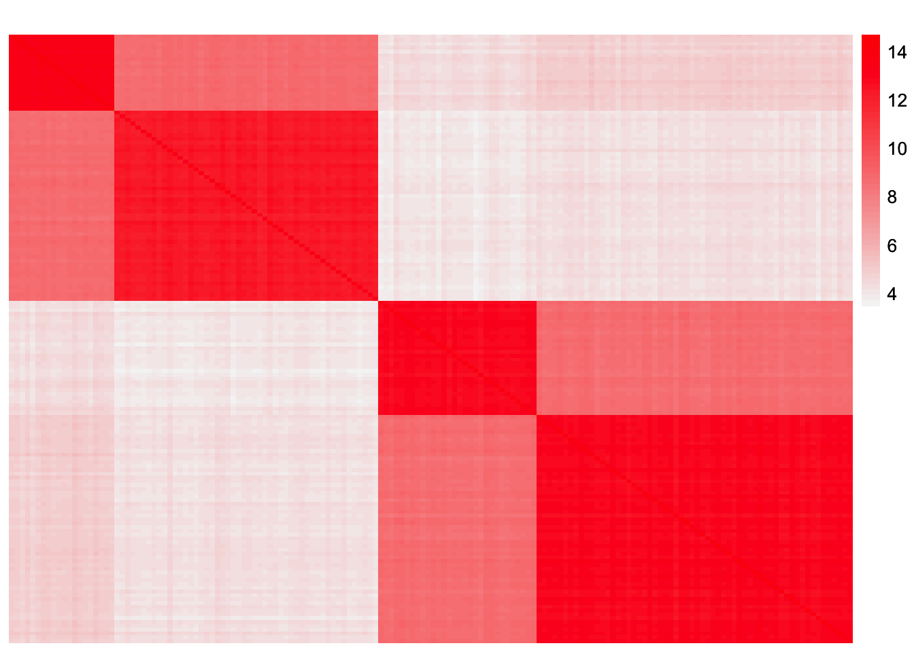
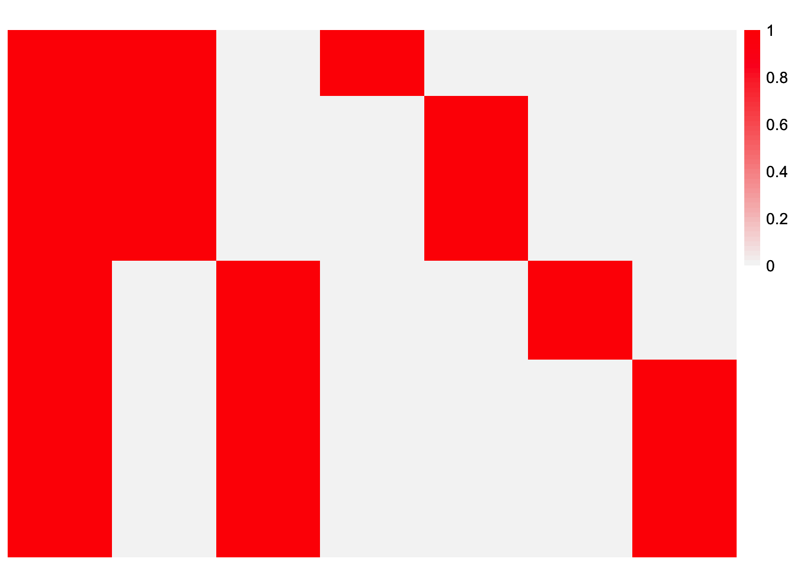
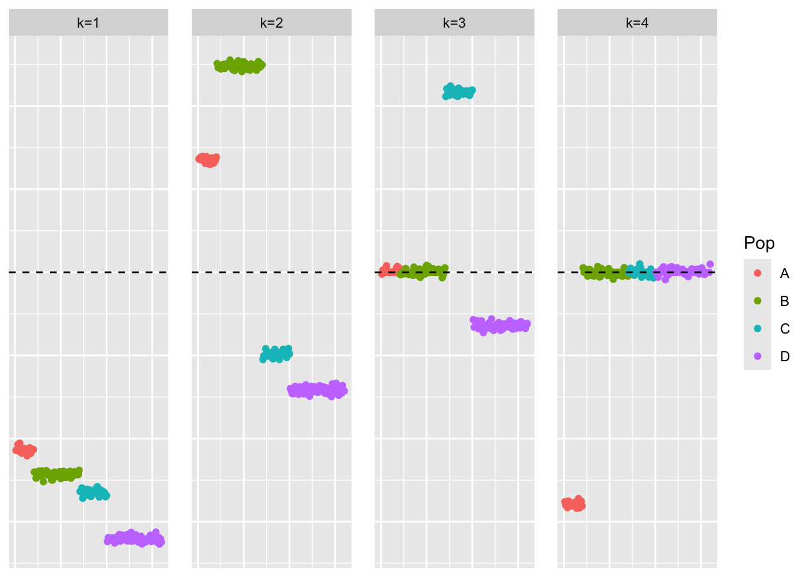
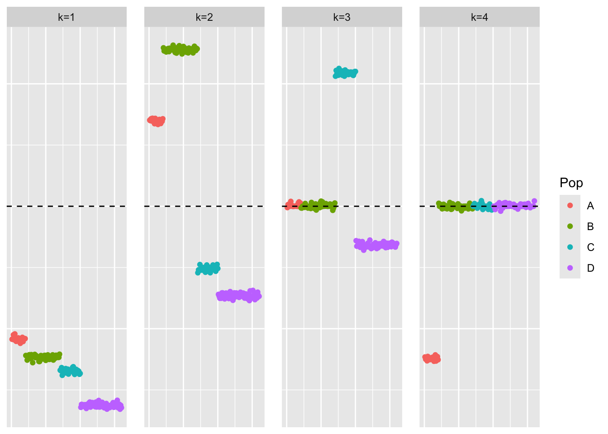
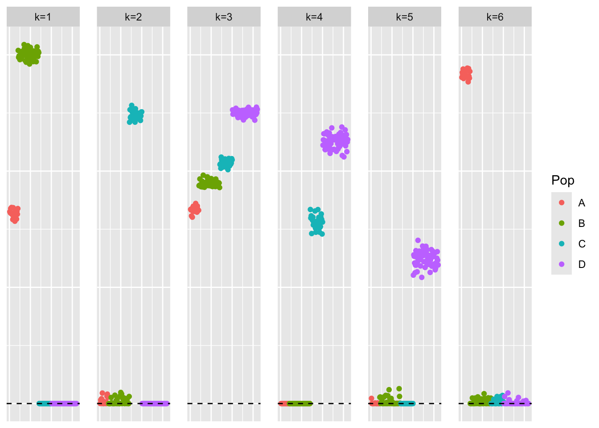
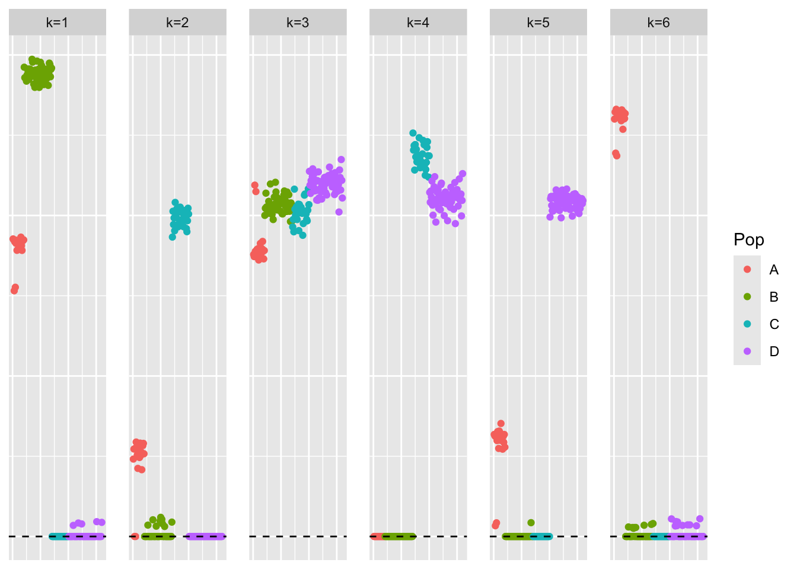
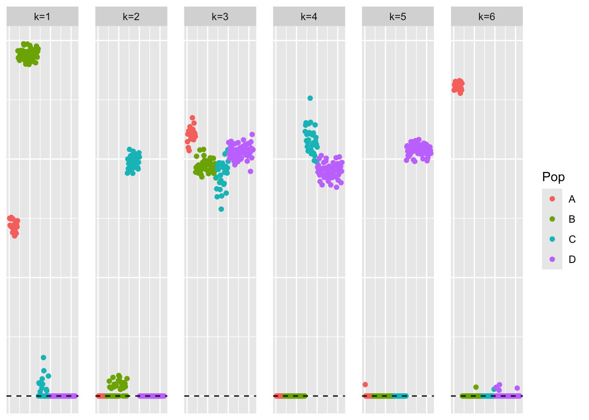
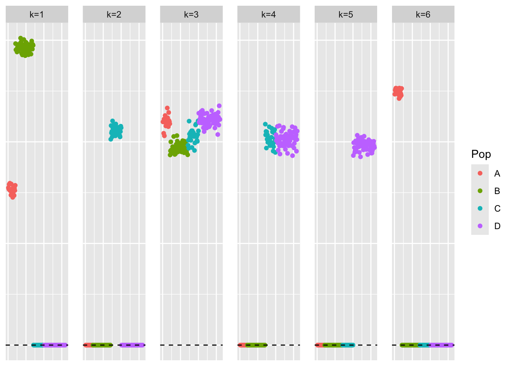

baltree_unequal_popsizes_exploration
Annie Xie
2025-11-17
Last updated: 2025-11-18
Checks: 7 0
Knit directory: covariance_decomps_dsc/
This reproducible R Markdown analysis was created with workflowr (version 1.7.2). The Checks tab describes the reproducibility checks that were applied when the results were created. The Past versions tab lists the development history.
Great! Since the R Markdown file has been committed to the Git repository, you know the exact version of the code that produced these results.
Great job! The global environment was empty. Objects defined in the global environment can affect the analysis in your R Markdown file in unknown ways. For reproduciblity it’s best to always run the code in an empty environment.
The command set.seed(20250203) was run prior to running
the code in the R Markdown file. Setting a seed ensures that any results
that rely on randomness, e.g. subsampling or permutations, are
reproducible.
Great job! Recording the operating system, R version, and package versions is critical for reproducibility.
Nice! There were no cached chunks for this analysis, so you can be confident that you successfully produced the results during this run.
Great job! Using relative paths to the files within your workflowr project makes it easier to run your code on other machines.
Great! You are using Git for version control. Tracking code development and connecting the code version to the results is critical for reproducibility.
The results in this page were generated with repository version bacd1b1. See the Past versions tab to see a history of the changes made to the R Markdown and HTML files.
Note that you need to be careful to ensure that all relevant files for
the analysis have been committed to Git prior to generating the results
(you can use wflow_publish or
wflow_git_commit). workflowr only checks the R Markdown
file, but you know if there are other scripts or data files that it
depends on. Below is the status of the Git repository when the results
were generated:
Ignored files:
Ignored: .DS_Store
Ignored: .Rhistory
Ignored: data/.DS_Store
Ignored: data/adclus_cov_comp_dsc_ex/.DS_Store
Ignored: data/adclus_same_init_dsc_ex/.DS_Store
Ignored: data/pt_laplace_split_init_ex/.DS_Store
Note that any generated files, e.g. HTML, png, CSS, etc., are not included in this status report because it is ok for generated content to have uncommitted changes.
These are the previous versions of the repository in which changes were
made to the R Markdown
(analysis/baltree_unequal_popsizes_exploration.Rmd) and
HTML (docs/baltree_unequal_popsizes_exploration.html)
files. If you’ve configured a remote Git repository (see
?wflow_git_remote), click on the hyperlinks in the table
below to view the files as they were in that past version.
| File | Version | Author | Date | Message |
|---|---|---|---|---|
| Rmd | bacd1b1 | Annie Xie | 2025-11-18 | Add exploration of balanced tree with unequal population sizes |
Introduction
In this analysis, I explore a simulation setting where the data is generated according to a balanced tree, but the leaves (i.e. populations) are different sizes. The reason I am interested in this is because of the row split stability selection method. In the row split stability selection method, we randomly split the samples into two groups. When applied to the balanced tree setting, this means that the leaves will likely be slightly different sizes. I want to investigate whether variation in the leaf sizes affects the methods’ abilities to recover a tree structure. Ideally the methods would be robust to this, but I’m not exactly sure.
Packages and Functions
library(dplyr)
library(ggplot2)
library(pheatmap)
library(flashier)source('code/visualization_functions.R')Data Generation
sim_4pops <- function(args) {
set.seed(args$seed)
n <- sum(args$pop_sizes)
p <- args$n_genes
FF <- matrix(rnorm(7 * p, sd = rep(args$branch_sds, each = p)), ncol = 7)
# if (args$constrain_F) {
# FF_svd <- svd(FF)
# FF <- FF_svd$u
# FF <- t(t(FF) * branch_sds * sqrt(p))
# }
LL <- matrix(0, nrow = n, ncol = 7)
LL[, 1] <- 1
LL[, 2] <- rep(c(1, 1, 0, 0), times = args$pop_sizes)
LL[, 3] <- rep(c(0, 0, 1, 1), times = args$pop_sizes)
LL[, 4] <- rep(c(1, 0, 0, 0), times = args$pop_sizes)
LL[, 5] <- rep(c(0, 1, 0, 0), times = args$pop_sizes)
LL[, 6] <- rep(c(0, 0, 1, 0), times = args$pop_sizes)
LL[, 7] <- rep(c(0, 0, 0, 1), times = args$pop_sizes)
E <- matrix(rnorm(n * p, sd = args$indiv_sd), nrow = n)
Y <- LL %*% t(FF) + E
YYt <- (1/p)*tcrossprod(Y)
return(list(Y = Y, YYt = YYt, LL = LL, FF = FF, K = ncol(LL)))
}sim_args = list(pop_sizes = c(20,50,30,60), n_genes = 1000, branch_sds = rep(2,7), indiv_sd = 1, seed = 1)
sim_data <- sim_4pops(sim_args)This is a heatmap of the scaled Gram matrix:
plot_heatmap(sim_data$YYt)
This is a heatmap of the loadings matrix:
plot_heatmap(sim_data$LL)
GBCD
GBCD is the primary method which performs well in the tree setting, so I want to check if GBCD still performs well. I feel like it should be able to, but I’m not sure if the symmetry in population sizes contributes to the performance of the point-Laplace fit.
We will break down GBCD into its various steps. (Note: this is not exactly the same as what GBCD does, but the general idea behind the steps is the same).
Investigating a point-Laplace fit
laplace_split_initialization <- function(S, Kmax, verbose = 2, backfit_maxiter = 500, backfit_tol = NULL){
# backfitting is important in the tree setting
# fit point-laplace fit with flash
flash_laplace_fit <- flash_init(data = S, var_type = 0) |>
flash_set_verbose(verbose = verbose) |>
flash_greedy(Kmax = Kmax, ebnm_fn = ebnm::ebnm_point_laplace) |>
flash_backfit(maxiter = backfit_maxiter, tol = backfit_tol) |>
flash_nullcheck()
# rescale fit so that L and F are of the same scale
flash_laplace_fit_scaled <- ldf(flash_laplace_fit, 'i')
LL <- flash_laplace_fit_scaled$L
##FF <- flash_laplace_fit_scaled$F
# split into positive and negative components
LL <- cbind(pmax(LL, 0), pmax(-LL, 0))
##FF <- cbind(pmax(FF, 0), pmax(-FF, 0))
# remove columns of zeros
idx.nonzero <- apply(LL, 2, function(x){return(sum(x^2))}) > 10^(-10)
LL <- LL[, idx.nonzero]
# refit weights by least squares
n <- nrow(S)
llt_vec <- matrix(rep(0, ncol(LL)*n*n), ncol = ncol(LL))
for (i in 1:ncol(LL)){
llt_vec[,i] <- c(LL[,i]%*%t(LL[,i]))
}
nnlm_fit <- NNLM::nnlm(llt_vec, as.matrix(c(S), ncol = 1), alpha = c(0,0,0))
indices_keep <- (nnlm_fit$coefficients > 0)
LL_scaled <- LL[,indices_keep] %*% diag(sqrt(nnlm_fit$coefficients[indices_keep]))
return(list(init_L = LL_scaled, pt_laplace_flash_fit = flash_laplace_fit))
}pt_laplace_split_init <- laplace_split_initialization(sim_data$YYt, 7, backfit_maxiter = 500)Adding factor 1 to flash object...
Optimizing factor...
Factor successfully added. Objective: -69670.252
Adding factor 2 to flash object...
Optimizing factor...
Factor successfully added. Objective: -45697.977
Adding factor 3 to flash object...
Optimizing factor...
Factor successfully added. Objective: -34839.988
Adding factor 4 to flash object...
Optimizing factor...
Factor successfully added. Objective: -19269.747
Adding factor 5 to flash object...
Optimizing factor...
Factor doesn't significantly increase objective and won't be added.
Wrapping up...
Done.
Backfitting 4 factors (tolerance: 3.81e-04)...
Difference between iterations is within 1.0e+04...
Difference between iterations is within 1.0e+03...
Difference between iterations is within 1.0e+02...
Difference between iterations is within 1.0e+01...
Difference between iterations is within 1.0e+00...
Difference between iterations is within 1.0e-01...
Difference between iterations is within 1.0e-02...
Difference between iterations is within 1.0e-03...
Backfit complete. Objective: 19468.398
Wrapping up...
Done.
Nullchecking 4 factors...
No factor can be removed without significantly decreasing the objective.
Done.This is a scatter plot of the loadings estimate from the point-Laplace fit:
plot_loadings(pt_laplace_split_init$pt_laplace_flash_fit$L_pm, Pop = rep(c('A','B','C','D'), times = c(20,50,30,60)))
This is a scatter plot of the factor estimate from the point-Laplace fit (due to the symmetry of the Gram matrix, we expect the factor estimate to look like the loadings estimate):
plot_loadings(pt_laplace_split_init$pt_laplace_flash_fit$F_pm, Pop = rep(c('A','B','C','D'), times = c(20,50,30,60)))
We see that the point-Laplace fit does not recover the binary components of the divergence factorization as well as the equal group case. For example, the baseline factor spans a range of values rather than being binary. The second factor is able to split the groups into their two respective branches. The third group also correctly splits the second branch into its two leaves. However, the fourth factor only identifies one of the two leaves in the first branch.
This is a plot of the non-negative loadings initialization for the gb fit:
plot_loadings(pt_laplace_split_init$init_L, Pop = rep(c('A','B','C','D'), times = c(20,50,30,60)))
GB fit
In this section, I fit the covariance decomposition with generalized binary prior. Here, I use the default scale setting for the generalized binary prior, which is 0.1.
Given that the point-Laplace fit missed one of the population-specific factors, the generalized binary fit will also miss this factor. However, the generalized binary fit might be able to make the other factors look more binary, more closely resembling the desired tree representation.
cov_fit_backfit <- function(covmat, init_L, ebnm_fn = ebnm::ebnm_point_laplace, verbose.lvl = 0) {
fl <- flash_init(covmat, var_type = 0) |>
flash_set_verbose(verbose.lvl) |>
flash_factors_init(list(init_L, init_L), ebnm_fn = ebnm_fn)
s2 <- max(0, mean(diag(covmat) - diag(fitted(fl))))
s2_diff <- Inf
while(s2 > 0 && abs(s2_diff - 1) > 1e-4) {
covmat_minuss2 <- covmat - diag(rep(s2, ncol(covmat)))
fl <- fl |>
flash_update_data(covmat_minuss2) |>
flash_set_verbose(verbose.lvl) |>
flash_backfit() |>
flash_nullcheck()
old_s2 <- s2
s2 <- max(0, mean(diag(covmat) - diag(fitted(fl))))
s2_diff <- s2 / old_s2
}
return(list(fl=fl, s2 = s2))
}ebmfcov_diag_fit <- cov_fit_backfit(sim_data$YYt,
init_L = pt_laplace_split_init$init_L,
ebnm_fn = ebnm::ebnm_generalized_binary)Warning in report.maxiter.reached(verbose.lvl): Maximum number of iterations
reached.ebmfcov_diag_flash_fit_scaled <- ldf(ebmfcov_diag_fit$fl, 'i')
est_L_scaled <- ebmfcov_diag_flash_fit_scaled$L %*% diag(sqrt(ebmfcov_diag_flash_fit_scaled$D))
est_F_scaled <- ebmfcov_diag_flash_fit_scaled$F %*% diag(sqrt(ebmfcov_diag_flash_fit_scaled$D))This is a plot of the loadings estimate:
plot_loadings(est_L_scaled, rep(c('A','B','C','D'), times = c(20,50,30,60)))
This is a plot of the factor estimate. Again, we expect this to match the loadings estimate:
plot_loadings(est_F_scaled, rep(c('A','B','C','D'), times = c(20,50,30,60)))
This is the correlation between the two estimates:
diag(cor(est_L_scaled, est_F_scaled))[1] 0.994789995 0.974333717 -0.004083429 0.998877406 0.981471833
[6] 0.999339358The baseline factor estimates actually have low correlation, and so they would get filtered out of the estimate. Perhaps if I used a more strictly binary prior, the baseline estimates would have looked more similar.
Alternative: GB fit with more strictly binary prior
In this section, I fit the covariance decomposition with a more
strictly binary version of the generalized binary prior. To make the
prior more binary, I set scale = 0.04.
ebmfcov_diag_lower_scale_fit <- cov_fit_backfit(sim_data$YYt,
init_L = pt_laplace_split_init$init_L,
ebnm_fn = flash_ebnm(prior_family = "generalized_binary", scale = 0.04))ebmfcov_diag_lower_scale_fit_scaled <- ldf(ebmfcov_diag_lower_scale_fit$fl, 'i')
est_L_lower_scale_scaled <- ebmfcov_diag_lower_scale_fit_scaled$L %*% diag(sqrt(ebmfcov_diag_lower_scale_fit_scaled$D))
est_F_lower_scale_scaled <- ebmfcov_diag_lower_scale_fit_scaled$F %*% diag(sqrt(ebmfcov_diag_lower_scale_fit_scaled$D))This is a plot of the loadings estimate:
plot_loadings(est_L_lower_scale_scaled, rep(c('A','B','C','D'), times = c(20,50,30,60)))
This is a plot of the factor estimate. Again, we expect this to match the loadings estimate:
plot_loadings(est_F_lower_scale_scaled, rep(c('A','B','C','D'), times = c(20,50,30,60)))This is the correlation between the two estimates:
diag(cor(est_L_lower_scale_scaled, est_F_lower_scale_scaled))[1] 1 1 1 1 1 1This is the ELBO of the fit:
ebmfcov_diag_lower_scale_fit$fl$elbo[1] 26402.98With a more strictly binary prior, the result looks more like a tree. But the representation of the first branch and its corresponding leaves is not exactly what we wanted to recover. Does the factor capturing the first branch also include the population-specific effect for the green population?
Initialize GB fit with the true loadings
In this section, I use the true loadings matrix to initialize the covariance decomposition fit. I stick with the more strictly binary version of the prior.
ebmfcov_diag_true_init_fit <- cov_fit_backfit(sim_data$YYt,
init_L = sim_data$LL %*% diag(sqrt(apply(sim_data$FF, 2, function(x){sum(x^2)}))),
ebnm_fn = flash_ebnm(prior_family = "generalized_binary", scale = 0.04))ebmfcov_diag_true_init_fit_scaled <- ldf(ebmfcov_diag_true_init_fit$fl, 'i')
est_L_true_init_scaled <- ebmfcov_diag_true_init_fit_scaled$L %*% diag(sqrt(ebmfcov_diag_true_init_fit_scaled$D))
est_F_true_init_scaled <- ebmfcov_diag_true_init_fit_scaled$F %*% diag(sqrt(ebmfcov_diag_true_init_fit_scaled$D))This is a plot of the loadings estimate:
plot_loadings(est_L_true_init_scaled, rep(c('A','B','C','D'), times = c(20,50,30,60)))
This is a plot of the factor estimate. Again, we expect this to match the loadings estimate:
plot_loadings(est_F_true_init_scaled, rep(c('A','B','C','D'), times = c(20,50,30,60)))
This is the correlation between the two estimates:
diag(cor(est_L_true_init_scaled, est_F_true_init_scaled))Warning in cor(est_L_true_init_scaled, est_F_true_init_scaled): the standard
deviation is zero[1] NA 1 1 1 1 1 1This is the ELBO of the fit:
ebmfcov_diag_true_init_fit$fl$elbo[1] -267791.3The other fit has a higher ELBO. So the method prefers the estimates from the previous fit.
sessionInfo()R version 4.5.1 (2025-06-13)
Platform: aarch64-apple-darwin20
Running under: macOS Sequoia 15.6
Matrix products: default
BLAS: /Library/Frameworks/R.framework/Versions/4.5-arm64/Resources/lib/libRblas.0.dylib
LAPACK: /Library/Frameworks/R.framework/Versions/4.5-arm64/Resources/lib/libRlapack.dylib; LAPACK version 3.12.1
locale:
[1] en_US.UTF-8/en_US.UTF-8/en_US.UTF-8/C/en_US.UTF-8/en_US.UTF-8
time zone: America/Chicago
tzcode source: internal
attached base packages:
[1] stats graphics grDevices utils datasets methods base
other attached packages:
[1] flashier_1.0.56 ebnm_1.1-42 pheatmap_1.0.13 ggplot2_4.0.0
[5] dplyr_1.1.4 workflowr_1.7.2
loaded via a namespace (and not attached):
[1] tidyselect_1.2.1 viridisLite_0.4.2 farver_2.1.2
[4] S7_0.2.0 fastmap_1.2.0 lazyeval_0.2.2
[7] promises_1.5.0 digest_0.6.37 lifecycle_1.0.4
[10] processx_3.8.6 invgamma_1.2 magrittr_2.0.4
[13] compiler_4.5.1 rlang_1.1.6 sass_0.4.10
[16] progress_1.2.3 tools_4.5.1 yaml_2.3.10
[19] data.table_1.17.8 knitr_1.50 labeling_0.4.3
[22] prettyunits_1.2.0 htmlwidgets_1.6.4 scatterplot3d_0.3-44
[25] plyr_1.8.9 RColorBrewer_1.1-3 Rtsne_0.17
[28] withr_3.0.2 purrr_1.2.0 grid_4.5.1
[31] git2r_0.36.2 fastTopics_0.7-30 colorspace_2.1-2
[34] scales_1.4.0 gtools_3.9.5 cli_3.6.5
[37] rmarkdown_2.30 crayon_1.5.3 generics_0.1.4
[40] otel_0.2.0 RcppParallel_5.1.11-1 rstudioapi_0.17.1
[43] httr_1.4.7 reshape2_1.4.4 pbapply_1.7-4
[46] cachem_1.1.0 stringr_1.6.0 splines_4.5.1
[49] parallel_4.5.1 softImpute_1.4-3 vctrs_0.6.5
[52] Matrix_1.7-4 jsonlite_2.0.0 callr_3.7.6
[55] hms_1.1.4 mixsqp_0.3-54 ggrepel_0.9.6
[58] irlba_2.3.5.1 trust_0.1-8 plotly_4.11.0
[61] jquerylib_0.1.4 tidyr_1.3.1 glue_1.8.0
[64] ps_1.9.1 uwot_0.2.3 cowplot_1.2.0
[67] stringi_1.8.7 Polychrome_1.5.4 gtable_0.3.6
[70] later_1.4.4 quadprog_1.5-8 NNLM_0.4.4
[73] tibble_3.3.0 pillar_1.11.1 htmltools_0.5.8.1
[76] truncnorm_1.0-9 R6_2.6.1 rprojroot_2.1.1
[79] evaluate_1.0.5 lattice_0.22-7 RhpcBLASctl_0.23-42
[82] SQUAREM_2021.1 ashr_2.2-67 httpuv_1.6.16
[85] bslib_0.9.0 Rcpp_1.1.0 deconvolveR_1.2-1
[88] whisker_0.4.1 xfun_0.54 fs_1.6.6
[91] getPass_0.2-4 pkgconfig_2.0.3